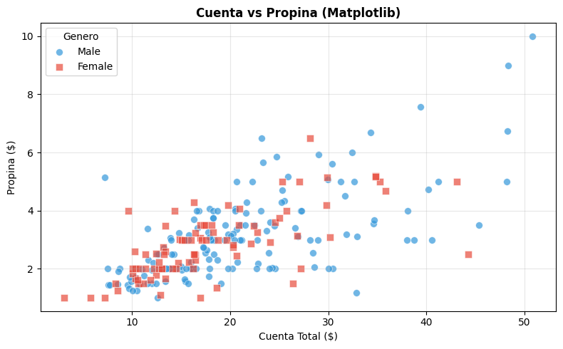
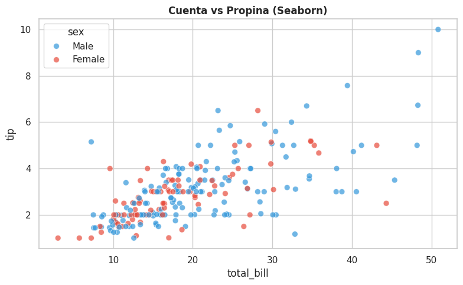
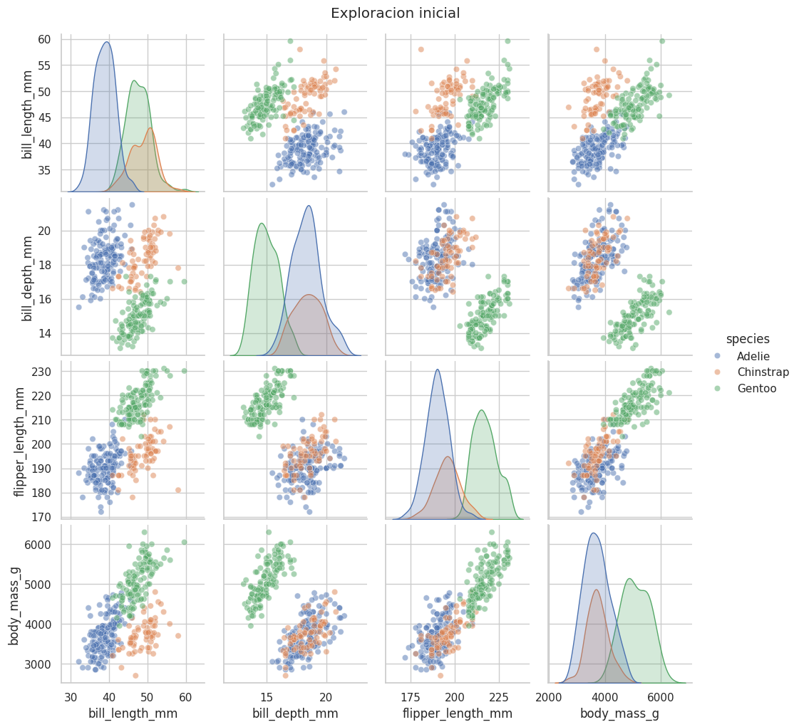
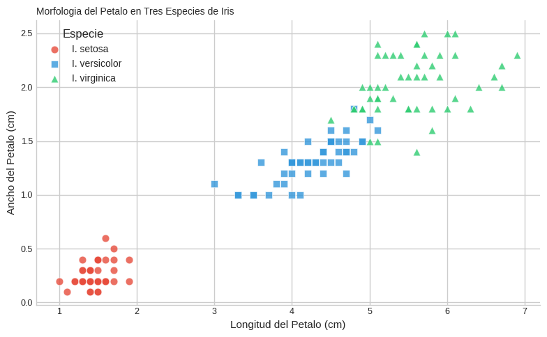

1.3.10: Comparativa y Casos de Uso#
7.1 Tabla comparativa#
Criterio |
Matplotlib |
Seaborn |
Plotly |
|---|---|---|---|
Velocidad de código |
Lenta |
Rápida |
Rápida (px) / Media (go) |
Control estético |
Total |
Limitado |
Total |
Interactividad |
No |
No |
Sí |
Gráficos estadísticos |
Manual |
Nativos |
Algunos |
3D |
Básico |
No |
Completo |
Integración Pandas |
Manual |
Nativa |
Nativa |
Publicaciones científicas |
Excelente |
Buena |
Limitada |
Web/Dashboards |
No |
No |
Excelente |
7.2 Guía de decisión#
¿Necesitas interactividad?
├── SÍ → PLOTLY
└── NO → ¿Para publicación científica?
├── SÍ → MATPLOTLIB
└── NO → ¿Gráfico estadístico rápido?
├── SÍ → SEABORN
└── NO → MATPLOTLIB
import matplotlib.pyplot as plt
import seaborn as sns
import plotly.express as px
import pandas as pd
import numpy as np
tips = sns.load_dataset('tips')
print('El MISMO gráfico con las tres bibliotecas:')
El MISMO gráfico con las tres bibliotecas:
7.3 Con Matplotlib#
# MATPLOTLIB — máximo control, más código
fig, ax = plt.subplots(figsize=(8, 5))
for sexo, color, marcador in [('Male','#3498DB','o'),('Female','#E74C3C','s')]:
mask = tips['sex'] == sexo
ax.scatter(tips.loc[mask,'total_bill'], tips.loc[mask,'tip'],
c=color, marker=marcador, s=50, alpha=0.7,
label=sexo, edgecolors='white', linewidths=0.5)
ax.set_title('Cuenta vs Propina (Matplotlib)', fontweight='bold', fontsize=12)
ax.set_xlabel('Cuenta Total ($)')
ax.set_ylabel('Propina ($)')
ax.legend(title='Genero')
ax.grid(True, alpha=0.3)
plt.tight_layout()
plt.show()
print('Matplotlib: 12 lineas, estatico, control total')

Matplotlib: 12 lineas, estatico, control total
7.4 Con Seaborn#
# SEABORN — rápido y elegante
sns.set_theme(style='whitegrid')
fig, ax = plt.subplots(figsize=(8, 5))
sns.scatterplot(data=tips, x='total_bill', y='tip', hue='sex',
palette={'Male':'#3498DB','Female':'#E74C3C'},
alpha=0.7, s=50, ax=ax)
ax.set_title('Cuenta vs Propina (Seaborn)', fontweight='bold', fontsize=12)
plt.tight_layout()
plt.show()
print('Seaborn: 5 lineas, estatico, integracion Pandas')

Seaborn: 5 lineas, estatico, integracion Pandas
7.5 Con Plotly#
# PLOTLY — interactivo con pocas líneas
fig = px.scatter(
tips, x='total_bill', y='tip', color='sex',
color_discrete_map={'Male':'#3498DB','Female':'#E74C3C'},
title='Cuenta vs Propina (Plotly)',
labels={'total_bill':'Cuenta Total ($)','tip':'Propina ($)','sex':'Genero'},
template='plotly_white',
hover_data=['day','time','size'], opacity=0.7)
fig.show()
print('Plotly: 6 lineas, interactivo (zoom, tooltips, filtros)')
Plotly: 6 lineas, interactivo (zoom, tooltips, filtros)
7.6 Referencia rápida#
Matplotlib#
Función |
Qué hace |
|---|---|
|
Líneas |
|
Puntos |
|
Barras verticales |
|
Barras horizontales |
|
Histograma |
|
Pastel |
|
Caja y bigotes |
|
Imagen/heatmap |
|
Cuadrícula de ejes |
|
Ajustar márgenes |
|
Guardar figura |
|
Línea vertical |
|
Línea horizontal |
|
Anotación con flecha |
Seaborn#
Función |
Qué hace |
|---|---|
|
Scatter con hue/size |
|
Línea con IC automático |
|
Histograma mejorado |
|
Curva de densidad |
|
Caja y bigotes |
|
Violín (KDE+box) |
|
Media con IC |
|
Mapa de calor |
|
Matriz de dispersión |
|
Regresión lineal |
|
Cuadrícula por categorías |
|
Quitar bordes |
Plotly Express#
Función |
Qué hace |
|---|---|
|
Scatter interactivo |
|
Línea interactiva |
|
Barras interactivas |
|
Histograma interactivo |
|
Boxplot interactivo |
|
Scatter 3D |
|
Mapa coroplético |
|
Treemap |
|
Sunburst |
|
Exportar HTML |
|
Exportar PNG/PDF |
7.7 Flujo de trabajo recomendado#
# PASO 1: Exploración rápida con Seaborn
import seaborn as sns, matplotlib.pyplot as plt
sns.set_theme(style='whitegrid')
df = sns.load_dataset('penguins').dropna()
print(df.describe())
sns.pairplot(df, hue='species', diag_kind='kde', plot_kws={'alpha': 0.5})
plt.suptitle('Exploracion inicial', y=1.02)
plt.show()
print('2 lineas = vision completa de los datos')
bill_length_mm bill_depth_mm flipper_length_mm body_mass_g
count 333.000000 333.000000 333.000000 333.000000
mean 43.992793 17.164865 200.966967 4207.057057
std 5.468668 1.969235 14.015765 805.215802
min 32.100000 13.100000 172.000000 2700.000000
25% 39.500000 15.600000 190.000000 3550.000000
50% 44.500000 17.300000 197.000000 4050.000000
75% 48.600000 18.700000 213.000000 4775.000000
max 59.600000 21.500000 231.000000 6300.000000

2 lineas = vision completa de los datos
# PASO 2: Analisis interactivo con Plotly
import plotly.express as px
df = px.data.iris()
fig = px.scatter_matrix(
df,
dimensions=['sepal_length','sepal_width','petal_length','petal_width'],
color='species', title='Matriz interactiva',
template='plotly_white')
fig.update_traces(diagonal_visible=False)
fig.show()
print('Click en la leyenda para filtrar especies')
Click en la leyenda para filtrar especies
# PASO 3: Grafico final para publicacion con Matplotlib
import matplotlib.pyplot as plt
import seaborn as sns
import numpy as np
df_iris = sns.load_dataset('iris')
plt.style.use('seaborn-v0_8-whitegrid')
fig, ax = plt.subplots(figsize=(8, 5))
cols = {'setosa':'#E74C3C','versicolor':'#3498DB','virginica':'#2ECC71'}
mrks = {'setosa':'o','versicolor':'s','virginica':'^'}
for esp in df_iris['species'].unique():
mask = df_iris['species'] == esp
ax.scatter(df_iris.loc[mask,'petal_length'], df_iris.loc[mask,'petal_width'],
c=cols[esp], marker=mrks[esp], s=60, alpha=0.8,
edgecolors='white', linewidths=0.5, label=f'I. {esp}')
ax.set_xlabel('Longitud del Petalo (cm)', fontsize=11)
ax.set_ylabel('Ancho del Petalo (cm)', fontsize=11)
ax.set_title('Morfologia del Petalo en Tres Especies de Iris', fontsize=10, loc='left')
ax.legend(title='Especie', framealpha=0.9, fontsize=10)
for spine in ['top','right']:
ax.spines[spine].set_visible(False)
ax.tick_params(labelsize=9)
plt.tight_layout()
# plt.savefig('figura.pdf', dpi=300, bbox_inches='tight')
plt.show()
print('Listo para publicar en revistas cientificas')

Listo para publicar en revistas cientificas
Recursos para continuar#
Recurso |
URL |
|---|---|
Documentación Matplotlib |
|
Galería Matplotlib |
|
Documentación Seaborn |
|
Documentación Plotly |
|
Plotly Express |
Próximos pasos#
Plotly Dash — dashboards web con Python
Bokeh — alternativa interactiva
Altair — visualización declarativa
Folium — mapas interactivos
ydata-profiling — reportes automáticos de EDA